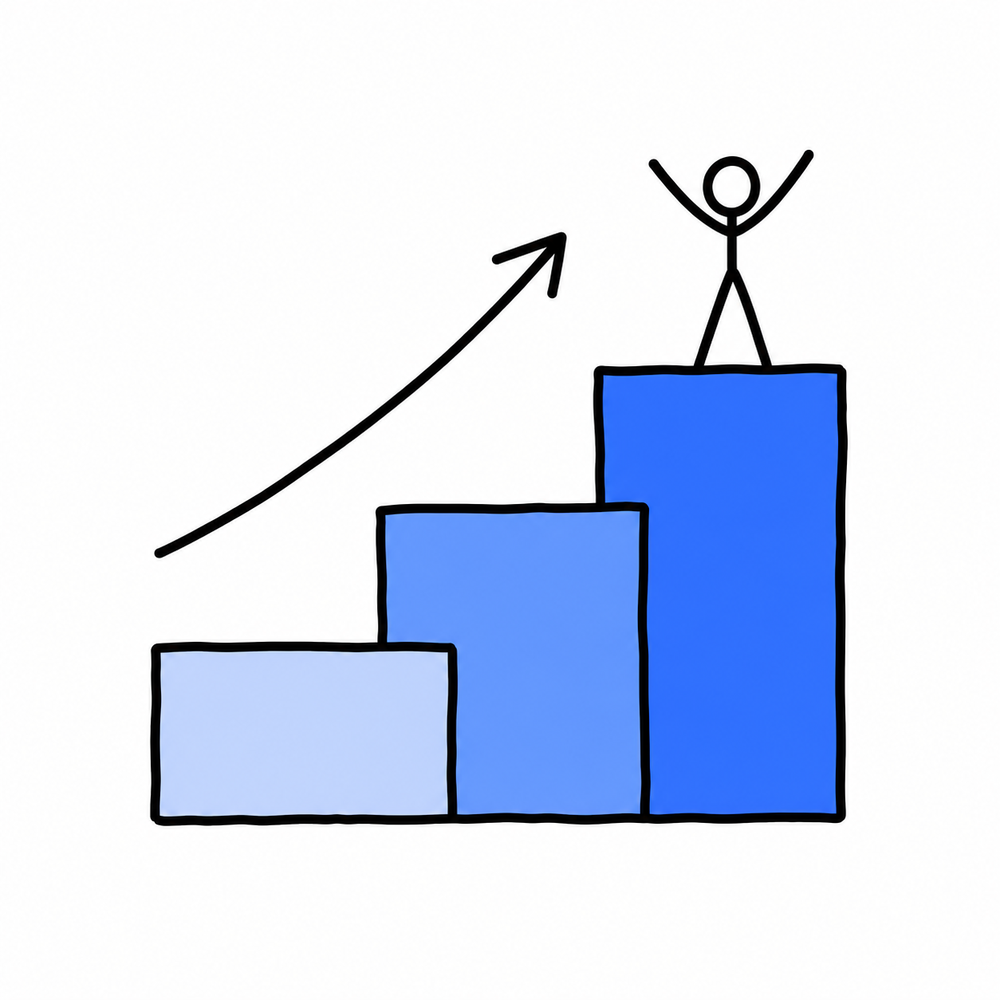

タイプ別の地図 — 3つの階層で捉える
そのまま使う→
ノーコードで作る
→開発者向け
◯選で覚えるより「タイプの地図」で。まず気軽に試し、必要になったら段階を上げる
1
そのまま使う自律型
設定不要。情報収集・要約をすぐ試せる（生成AI付属も）
スキル 低
必要スキル
2
ノーコード構築型
画面操作で"自社仕様"を作る（Dify・Coze等が代表例）
スキル 中
必要スキル
3
開発者向け・コーディング支援型
OSS・コード補助。柔軟だが構築と保守の技術力が要る
スキル 高
必要スキル

気軽に試す → 作り込む へ
段階を上げる
優劣ではなく"段階"。
無料で始める大多数は 1〜2 で十分
AIを会社のOSにする。